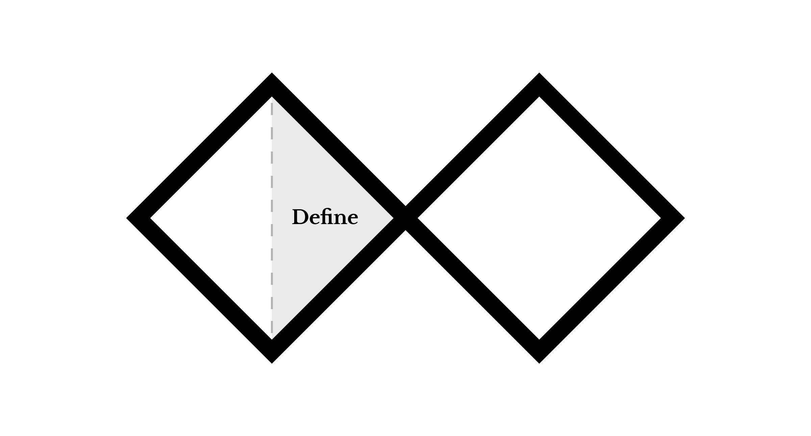

Define: How Might We ...?
A "How might we" (HMW) question is both an insight about what the core issue is as well as a focus aid for the design process. This question will serve as inspiration during the development and delivery phases of the project. If your development strays too far from the HMW question, the solution you deliver might be solving a different set of issues from the ones you set out to solve. Refer back to the HMW question often throughout the process.
Use the following pattern for creating the sentence: How might we ( positive action ) ( a description of specific challenge ) ( a specific context ) ?
Materials
- Pen or pencil
- Journal
Example Question
In this example, let's say that I discovered that a friend was anxious about socializing. The HMW question could be phrased like this:
How might we ( relieve the stress of social interaction from ) ( a person who has trouble feeling comfortable in groups ) ( when they socialize with friends )?
Instructions
- Based on your interview insights, use the sentence template to write three possible HMW questions, one for each insight.
- Review your sentences and circle the one you think works best.
- Document your HMW question with a photograph or scan.
Post work to the Studio
Use the file format indicated in each step. You must obtain prior approval to deviate from these upload requirements. Please check that your work has uploaded properly.
- Upload the photograph or scan of your HMW questions in
.jpgor.pngformat.